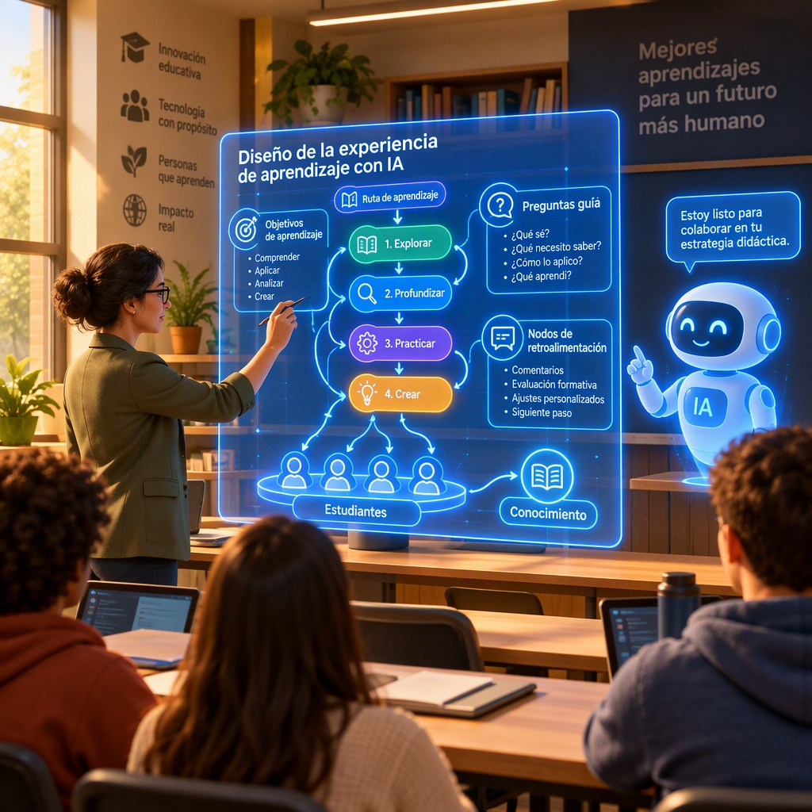

Título de la obra:
Estrategias de Inteligencia Artificial para la educación superior
Autores:
Julieth Andrea Gómez Hernández
Juan Guillermo Rivera Berrío
Código JavaScript para el libro: Joel Espinosa Longi, IMATE, UNAM.
Recursos interactivos: DescartesJS, WebSim, Phet Colorado, GeoGebra, ...
Fuentes: Lato y UbuntuMono
Imagen de portada: ilustración generada por Ideogram AI
Red Educativa Digital Descartes
Córdoba (España)
descartes@proyectodescartes.org
https://proyectodescartes.org
Proyecto iCartesiLibri
https://proyectodescartes.org/iCartesiLibri/index.htm
ISBN:

Esta obra está bajo una licencia Creative Commons 4.0 internacional: Reconocimiento-No Comercial-Compartir Igual.
La inteligencia artificial generativa ya forma parte de las conversaciones sobre la educación superior, pero su presencia no adquiere sentido por la sola disponibilidad de una herramienta. Lo adquiere cuando se vincula con una necesidad de aprendizaje, con una intención pedagógica y con una responsabilidad compartida. Este libro parte de esa premisa para explorar cómo la IA puede actuar como herramienta, tutor o mediador, siempre bajo la orientación del docente y con la participación crítica del estudiante. Su propósito es ofrecer criterios para integrarla en actividades que promuevan comprensión, argumentación, autonomía, reflexión y producción propia.
La obra propone mirar la IA más allá de la respuesta inmediata. Preguntar, contrastar, revisar y justificar son acciones centrales de las estrategias aquí reunidas. Por ello, el libro insiste en diseñar antes de preguntar, formular instrucciones relacionadas con objetivos y evidencias, y convertir la interacción con los sistemas generativos en una oportunidad para hacer visible el razonamiento. La IA puede explicar, sugerir, simular, ofrecer retroalimentación o plantear preguntas; sin embargo, sus respuestas pueden ser incorrectas, sesgadas o poco pertinentes. La verificación mediante fuentes académicas, la supervisión humana, la protección de datos y la transparencia sobre su uso constituyen, por tanto, condiciones necesarias de cualquier práctica responsable.
La organización sigue un recorrido que va del aula a la institución. Primero se examinan las funciones educativas de la IA y el diseño de instrucciones como estrategia pedagógica; después se abordan formas de acompañar el pensamiento mediante el diálogo socrático, investigar con apoyo de sistemas generativos y crear sin dejar de aprender. El recorrido conduce luego a la planificación gradual de experiencias y proyectos, a la revisión de las formas de evaluación y a la
consideración de los riesgos, la ética y el uso responsable. Finalmente, la mirada se amplía hacia la implementación y la innovación, entendidas como procesos que requieren diagnóstico, preparación, pilotaje, seguimiento y mejora continua.
A lo largo de estas páginas, las propuestas se articulan con casos de uso, ciclos de trabajo, criterios de evaluación y evidencias del proceso. Un borrador inicial, las fuentes consultadas, las versiones sucesivas, las decisiones adoptadas, la defensa oral o la reflexión final pueden revelar aprendizajes que un producto aislado no siempre permite observar. De este modo, el libro invita a rediseñar las actividades y a valorar no solo qué entrega el estudiante, sino qué comprende, cómo argumenta, qué verifica y qué puede explicar con apoyo de la IA. La responsabilidad intelectual permanece en la comunidad académica: en quienes aprenden, enseñan, evalúan y establecen las condiciones de uso.
Conviene recorrer este libro como una invitación a experimentar con prudencia y propósito. Sus estrategias no presentan la IA como sustituta de la enseñanza ni del esfuerzo intelectual, sino como un recurso cuyo valor depende del diseño, la reflexión y la supervisión. Tanto los textos como las imágenes de esta obra se generaron con ayuda de inteligencia artificial; esta declaración forma parte del compromiso de transparencia que el propio libro propone. Que estas páginas sirvan, entonces, para formular mejores preguntas, construir experiencias más significativas y sostener una educación superior en la que innovar también signifique cuidar el aprendizaje, la autoría y la responsabilidad.
La inteligencia artificial generativa (IA) puede entenderse en el aula como una tecnología capaz de producir texto, imágenes, código o retroalimentación a partir de instrucciones humanas. En la educación superior, su papel no es único: funciona como herramienta cuando apoya una tarea concreta; como tutor cuando ofrece explicaciones, preguntas y retroalimentación; y como mediador cuando facilita la interacción entre estudiantes, docentes, contenidos y contextos profesionales. Kasneci et al. (2023) señalan que los modelos de lenguaje pueden ampliar las oportunidades de aprendizaje, aunque sus resultados dependen de la calidad de las instrucciones, de la supervisión humana y de la capacidad del estudiante para evaluar críticamente las respuestas.
Sus componentes principales son el modelo de IA, la interfaz conversacional, los datos o materiales de referencia, las instrucciones del usuario y los mecanismos de evaluación. El principio de funcionamiento consiste en procesar una entrada —por ejemplo, una pregunta, un caso clínico o un borrador— y generar una respuesta basada en patrones aprendidos. En términos didácticos, el proceso puede organizarse así:
1. El estudiante formula una necesidad o problema.
2. La IA genera una explicación, alternativa o pregunta orientadora.
3. El estudiante contrasta la respuesta con bibliografía académica y criterios disciplinares.
4. El docente revisa el proceso y no solo el producto final.
5. La actividad culmina con una reflexión sobre los aciertos, errores y decisiones tomadas.
En este modelo, la IA no sustituye la enseñanza, sino que participa en los procesos internos de aprendizaje: activar conocimientos previos, proporcionar ejemplos graduados, proponer contraargumentos, detectar vacíos conceptuales y ofrecer retroalimentación inmediata. Sus aplicaciones prácticas incluyen la simulación de entrevistas profesionales, la creación de preguntas para debates, la revisión inicial de textos, la programación asistida, la traducción académica y el diseño de escenarios de aprendizaje basados en problemas. Tlili et al. (2023) consideran que los chatbots pueden actuar como interlocutores educativos útiles, especialmente cuando se emplean para promover diálogo y exploración, y no únicamente para entregar respuestas terminadas.
Entre sus beneficios y ventajas destacan la disponibilidad permanente, la personalización de explicaciones, la posibilidad de practicar sin temor al juicio y la reducción del tiempo dedicado a ciertas tareas rutinarias. Sin embargo, también presenta desafíos y limitaciones: puede generar información falsa o sesgada, reproducir desigualdades presentes en los datos, comprometer la privacidad y favorecer prácticas de plagio o dependencia intelectual. Cotton et al. (2023) advierten que la evaluación universitaria debe desplazarse desde la simple comprobación del producto hacia la valoración del razonamiento, las fuentes utilizadas, las versiones sucesivas y la defensa oral del trabajo.
Un caso de uso responsable sería pedir a un estudiante que utilice IA para proponer tres interpretaciones de un problema, verifique cada una con fuentes especializadas, identifique los errores del sistema y entregue una bitácora argumentada del proceso.
La UNESCO (2023) recomienda complementar estas prácticas con alfabetización en IA, protección de datos, transparencia y supervisión docente.

Un prompt es una instrucción diseñada para orientar la respuesta de un sistema de inteligencia artificial generativa. En educación superior, no debe entenderse como una simple pregunta, sino como una estrategia de diseño pedagógico: antes de solicitar una respuesta, el docente define qué aprendizaje busca, qué evidencias espera y qué grado de autonomía tendrá el estudiante. Un prompt eficaz delimita el propósito, el contexto disciplinar, el rol de la IA, el formato de salida, los criterios de calidad y las restricciones éticas. Esta planificación resulta relevante porque los modelos generativos pueden producir respuestas plausibles, pero inexactas, sesgadas o poco ajustadas al nivel académico del usuario (Kasneci et al., 2023; Lo, 2023).
El diseño puede organizarse mediante seis componentes principales: objetivo de aprendizaje, contexto, rol, tarea, criterios de evaluación y formato de respuesta
El principio de funcionamiento consiste en diseñar antes de preguntar, probar, analizar y mejorar. El proceso interno de trabajo puede representarse como un ciclo: primero se identifica la competencia; después se redacta una instrucción inicial; a continuación se examina la respuesta de la IA; finalmente, se reformula el prompt para corregir ambigüedades, omisiones o errores. En el aula, el docente puede pedir que los estudiantes comparen dos prompts para una misma tarea y justifiquen cuál produce una respuesta más pertinente. Entre las aplicaciones prácticas se encuentran la generación de casos clínicos, la simulación de entrevistas profesionales, la elaboración de contraargumentos, la retroalimentación sobre borradores y la creación de preguntas de práctica. Estas actividades son coherentes con una visión de la IA como mediadora del aprendizaje activo y de la autorregulación (Kasneci et al., 2023).
Una estrategia especialmente útil es solicitar a la IA que haga explícitos los criterios con los que debe responder. Por ejemplo: “Presenta dos interpretaciones posibles, indica qué datos respaldan cada una, señala las incertidumbres y formula una pregunta que permita verificar la información”. Este tipo de instrucción favorece la evaluación
crítica de la respuesta y evita aceptar automáticamente el texto generado. También puede emplearse una rúbrica para valorar precisión conceptual, uso de evidencias, pertinencia disciplinar, claridad, reconocimiento de límites y transparencia sobre el uso de IA. De este modo, el producto final no es únicamente la respuesta de la herramienta, sino el proceso mediante el cual el estudiante la interroga, contrasta y mejora.
El uso pedagógico de prompts presenta beneficios, pero también desafíos. Entre sus ventajas se encuentran la personalización de explicaciones, la rápida generación de ejemplos y la posibilidad de practicar en entornos conversacionales. Sin embargo, persisten riesgos relacionados con alucinaciones, sesgos, privacidad, dependencia tecnológica, desigualdad en el acceso y dificultades para determinar la autoría del trabajo académico (Lo et al., 2023; Tlili et al., 2023).
Cada actividad debería incluir reglas claras: no introducir datos personales o confidenciales, verificar afirmaciones mediante fuentes académicas, declarar cuándo se utilizó IA y conservar evidencias del proceso de elaboración. Como caso de aplicación, un seminario puede pedir al estudiante que produzca un prompt inicial, analice críticamente la respuesta obtenida, documente sus modificaciones y entregue una reflexión final sobre qué decisiones intelectuales siguieron siendo exclusivamente humanas.
Un tutor socrático basado en inteligencia artificial es un sistema conversacional diseñado para promover el razonamiento del estudiante mediante preguntas, pistas y retroalimentación gradual, en
lugar de entregar directamente la solución. Su funcionamiento se inspira en el diálogo socrático: el estudiante formula una respuesta, la IA identifica posibles vacíos o contradicciones y plantea una nueva pregunta que lo ayuda a revisar su propio pensamiento. En este sentido, el objetivo no es únicamente transmitir información, sino desarrollar comprensión, argumentación y metacognición. Kasneci et al. (2023) señalan que los modelos generativos pueden apoyar procesos personalizados de aprendizaje, aunque su valor educativo depende de la mediación pedagógica y de la forma en que se integren en la actividad académica.
Sus componentes principales son: a) un modelo de lenguaje capaz de interpretar
respuestas abiertas; b) un perfil del estudiante, que registra conocimientos previos, errores frecuentes y nivel de autonomía; c) un motor de diálogo socrático, que selecciona preguntas de aclaración, comparación, justificación o transferencia; d) un sistema de retroalimentación, que ofrece pistas sin resolver inmediatamente el problema; y e) mecanismos de evaluación y seguridad. El proceso interno puede representarse así: primero, la IA analiza la respuesta; después, identifica el concepto implicado y el tipo de dificultad; finalmente, genera una pregunta ajustada al nivel del estudiante. Por ejemplo, ante la respuesta incorrecta “la inflación siempre aumenta el poder adquisitivo”, el tutor podría preguntar: “¿Qué ocurre con la cantidad de bienes que puedes comprar si los precios suben y tus ingresos permanecen constantes?”. Esta estrategia convierte el error en una oportunidad de razonamiento y evita que la interacción se reduzca a copiar una respuesta.
En la educación superior, sus aplicaciones prácticas incluyen la resolución guiada de problemas de física, el análisis de casos empresariales, la revisión de argumentos jurídicos, la interpretación de textos
científicos y la preparación de exámenes orales. Un estudiante de enfermería, por ejemplo, puede proponer un diagnóstico y recibir preguntas como: “¿Qué evidencia clínica respalda esa hipótesis?”, “¿Qué diagnóstico alternativo deberías descartar?” o “¿Qué dato adicional necesitas?”. Del mismo modo, en programación, la IA puede preguntar qué condición no se está cumpliendo antes de sugerir una modificación del código. Lo (2023) destaca que las herramientas generativas pueden favorecer la interacción personalizada y el aprendizaje activo, pero advierte que la calidad de los resultados depende de instrucciones claras, supervisión docente y actividades que exijan elaboración propia.
Entre sus beneficios y ventajas se encuentran la personalización del ritmo de aprendizaje, la disponibilidad inmediata de retroalimentación, la práctica segura de respuestas y el desarrollo de habilidades metacognitivas.
Además, el tutor puede adaptar la dificultad: comenzar con preguntas de definición, avanzar hacia preguntas de relación causal y culminar con tareas de aplicación o evaluación crítica. Sin embargo, existen desafíos y limitaciones: la IA puede formular preguntas irrelevantes, aceptar razonamientos deficientes, reproducir sesgos o presentar una falsa apariencia de comprensión. Tlili et al. (2023) advierten que los sistemas conversacionales pueden producir información incorrecta y generar dependencia si el estudiante los utiliza como sustitutos del esfuerzo intelectual. Por ello, el tutor debe incorporar límites explícitos: no resolver la tarea durante los primeros turnos, solicitar justificaciones, pedir evidencias y transferir progresivamente la responsabilidad al estudiante.
Una implementación responsable requiere combinar la IA con el diseño docente. Algunas reglas operativas son:
El tutor socrático no debe evaluarse por la cantidad de respuestas que proporciona, sino por la calidad de las preguntas que ayuda a construir y por la autonomía que desarrolla en el estudiante. Su función más valiosa es actuar como andamiaje temporal: acompaña el razonamiento, hace visibles los supuestos y disminuye gradualmente su intervención a medida que aumenta la competencia del aprendiz.

La estrategia de las 6 fases para el uso educativo de la IA puede plantearse como un modelo pedagógico para evitar que la IA se limite a «dar respuestas» y, en cambio, se convierta en un medio para desarrollar pensamiento crítico, autonomía y aprendizaje profundo.
Las 6 fases
Investigar con IA no consiste en aceptar una respuesta automática, sino en utilizar sistemas generativos y buscadores asistidos para formular preguntas, localizar información, contrastar evidencias y construir una interpretación propia. Un modelo de lenguaje procesa patrones estadísticos aprendidos de grandes conjuntos de datos y produce respuestas probables a partir de una instrucción; por ello, puede redactar explicaciones plausibles aunque contengan errores o referencias inexistentes.
Lo et al. (2023) señalan que estas herramientas pueden apoyar la generación de ideas, la explicación de conceptos y la personalización del aprendizaje, pero requieren supervisión humana. Un proceso de investigación responsable puede organizarse así: preguntar con precisión, pedir fuentes y criterios, verificar en documentos independientes, comparar perspectivas y elaborar una respuesta sustentada.
Los componentes principales de esta estrategia son: la pregunta de investigación, que delimita el problema; el prompt, que especifica contexto, propósito, audiencia y formato; la evidencia, constituida por artículos, libros académicos, datos y documentos institucionales; y la evaluación crítica, que examina autoría, fecha, metodología, sesgos y consistencia. Para mejorar la interacción, el estudiante puede solicitar a la IA que proponga palabras clave, conceptos relacionados, hipótesis alternativas o criterios de inclusión y exclusión. Sin embargo, la IA debe funcionar como apoyo heurístico, no como fuente final. Kasneci et al. (2023) destacan que los modelos generativos pueden favorecer el diálogo y la retroalimentación, aunque también presentan riesgos de alucinación, sesgo, dependencia tecnológica y falta de transparencia sobre el origen de sus respuestas.
El proceso interno de contrastación puede representarse mediante un ciclo de cinco acciones:
1. Explorar: pedir definiciones provisionales, preguntas derivadas y términos de búsqueda.
2. Localizar: consultar bases académicas, repositorios y catálogos universitarios, priorizando textos con autoría identificable.
3. Contrastar: comparar la respuesta de la IA con al menos dos fuentes independientes y revisar si las afirmaciones aparecen realmente en ellas.
4. Interpretar: distinguir datos, inferencias, opiniones y vacíos de conocimiento.
5. Construir: redactar una explicación propia, citar las fuentes consultadas y declarar el uso de IA cuando la normativa académica lo requiera.
Este ciclo resulta útil, por ejemplo, para investigar el impacto de la desinformación en salud: la IA puede ayudar a generar descriptores y clasificar argumentos, pero el estudiante debe comprobar cada afirmación en artículos revisados por pares y organismos especializados. Tlili et al. (2023) advierten que el uso educativo de ChatGPT exige diseñar actividades que promuevan el pensamiento crítico y no solo la reproducción de respuestas. Entre sus beneficios se encuentran la rapidez para iniciar una búsqueda, la posibilidad de recibir explicaciones adaptadas y la generación de perspectivas alternativas; entre sus limitaciones están las respuestas incorrectas, la actualización incompleta, los sesgos lingüísticos, los problemas de privacidad y el riesgo de plagio. Por ello, una buena práctica es conservar el historial de consultas, registrar las fuentes verificadas y explicar qué decisiones intelectuales tomó el estudiante.
En la educación superior, la competencia central no es “saber pedirle todo a la IA”, sino aprender a interrogarla y a discutir con ella. Una consigna eficaz puede solicitar: “Presenta tres hipótesis sobre este problema, indica qué evidencias apoyaría cada una, señala posibles sesgos y propone fuentes académicas para verificarlas”. Después, el estudiante debe revisar directamente los textos, corregir las afirmaciones imprecisas y producir una síntesis argumentada.
La UNESCO (2023) recomienda incorporar orientaciones de uso ético, protección de datos, transparencia y formación docente. Así, la IA se convierte en una herramienta para ampliar la investigación, mientras que la responsabilidad epistemológica —decidir qué es válido, relevante y justificable— permanece en manos de la comunidad académica.
Crear con inteligencia artificial sin dejar de aprender significa utilizarla como andamiaje cognitivo, no como sustituto del razonamiento. En este enfoque, la persona estudiante formula una pregunta, propone una idea o produce un primer borrador y emplea la IA para recibir retroalimentación, comparar alternativas y detectar vacíos. El principio de funcionamiento es iterativo: crear, revisar, justificar y mejorar. Los componentes principales son el conocimiento disciplinar del estudiante, una herramienta generativa, instrucciones o prompts claros, criterios de evaluación y una instancia de reflexión. Kasneci et al. (2023) señalan que los modelos de lenguaje pueden apoyar la explicación personalizada y la generación de ideas, pero también pueden producir información incorrecta o respuestas aparentemente convincentes sin fundamento.
Un proceso educativo adecuado puede organizarse en cinco momentos: 1) definir el objetivo de aprendizaje; 2) elaborar una respuesta inicial sin IA; 3) solicitar a la herramienta alternativas, preguntas críticas o ejemplos; 4) verificar la información mediante fuentes académicas y criterios de la disciplina; y 5) reescribir el producto explicando qué decisiones fueron propias. Así, la IA funciona como interlocutora y objeto de análisis: el estudiante no solo recibe un texto, sino que examina sus supuestos, identifica errores y argumenta por qué
acepta o rechaza una sugerencia. Lo (2023) advierte que el valor educativo de ChatGPT depende de cómo se integra en el diseño didáctico; una actividad centrada únicamente en copiar respuestas puede reducir la participación cognitiva, mientras que una actividad basada en comparación, evaluación y revisión puede promover aprendizajes más profundos.
Aplicaciones prácticas incluyen pedir a la IA que formule objeciones a una hipótesis, convierta un texto en preguntas de autoevaluación, represente a un cliente en una simulación profesional o sugiera varias soluciones a un problema de diseño. Por ejemplo, en una asignatura de investigación, el estudiante puede presentar su planteamiento del problema y solicitar tres críticas metodológicas; después debe contrastarlas con artículos científicos, decidir cuáles son pertinentes y producir una versión revisada. En programación, puede pedir explicaciones de un error, pero debe probar cada solución, documentar los cambios y explicar el funcionamiento del código. Tlili et al. (2023) destacan que estos usos pueden favorecer la personalización, el diálogo y la experimentación, siempre que el docente establezca objetivos, límites y actividades de comprobación.
Los beneficios principales son la retroalimentación inmediata, la posibilidad de explorar múltiples perspectivas y el apoyo a estudiantes que necesitan practicar antes de participar públicamente. Sin embargo, persisten desafíos: alucinaciones o datos inventados, sesgos, dependencia excesiva, pérdida de autoría, problemas de privacidad y dificultades para distinguir ayuda legítima de sustitución del trabajo intelectual. Para enfrentarlos, conviene aplicar reglas explícitas: declarar cuándo se utilizó IA, conservar borradores y versiones, no introducir datos personales o confidenciales, verificar afirmaciones relevantes y evaluar también el proceso.
De este modo, crear con IA se convierte en una práctica de alfabetización digital y disciplinar, no en una vía para evitar aprender.
La pregunta central no es si la IA puede producir una respuesta, sino si esa respuesta constituye evidencia válida del aprendizaje del estudiante. Evaluar cuándo la IA puede responder por él implica distinguir entre una tarea cuyo propósito es demostrar un resultado final y otra destinada a observar el razonamiento, la toma de decisiones o la autoría. En este marco, la IA generativa funciona como un sistema capaz de producir textos, explicaciones, código o soluciones a partir de instrucciones, pero no garantiza que el estudiante comprenda, verifique o pueda defender lo producido.
Kasneci et al. (2023) señalan que estas herramientas pueden apoyar la personalización y la retroalimentación, aunque también introducen riesgos relacionados con la precisión, la dependencia y la integridad académica.
El principio de funcionamiento consiste en alinear el nivel de autorización de la IA con el resultado de aprendizaje. Para ello, el docente puede analizar cuatro componentes: (a) el propósito de la evaluación; (b) el tipo de conocimiento que se pretende observar; (c) el grado de asistencia permitido; y (d) las evidencias que demostrarán la participación del estudiante. Una actividad puede permitir IA para generar ideas, traducir, corregir estilo o proporcionar retroalimentación, pero prohibirla cuando el objetivo sea evaluar la argumentación original, el dominio conceptual o la resolución autónoma de un problema. El proceso interno de decisión puede formularse mediante estas preguntas:
En las aplicaciones prácticas, esta evaluación conduce a rediseñar las tareas en lugar de limitarse a prohibir la herramienta.
Por ejemplo, en una asignatura de programación, la IA puede ayudar a proponer código, pero el estudiante debe explicar su funcionamiento, identificar errores, modificarlo para un caso nuevo y justificar sus decisiones. En investigación, puede utilizarse para sugerir palabras clave o comparar enfoques, mientras que la selección de fuentes, la evaluación de su calidad y la síntesis crítica deben quedar documentadas. En escritura académica, el estudiante puede presentar el historial de versiones, una declaración de uso de IA y una reflexión sobre qué recomendaciones aceptó o rechazó. Cotton et al. (2024) destacan que las evaluaciones centradas exclusivamente en un producto final son especialmente vulnerables cuando las herramientas generativas pueden producir respuestas plausibles en pocos segundos.
Los beneficios de este enfoque incluyen evaluaciones más auténticas, mayor énfasis en la metacognición y oportunidades para enseñar un uso responsable de la tecnología. Sin embargo, existen desafíos y limitaciones: las respuestas de la IA pueden contener errores, sesgos o referencias inexistentes; además, los detectores automáticos no deben considerarse pruebas concluyentes de fraude. Weber-Wulff et al. (2023) encontraron limitaciones importantes en las herramientas de detección de texto generado por IA, por lo que una decisión académica no debería basarse únicamente en una puntuación algorítmica. Un caso realista es el de un informe que coincide con patrones de texto generativo: en lugar de sancionar automáticamente, el docente puede solicitar una defensa oral breve, revisar los borradores y pedir al estudiante que aplique su propuesta a un escenario diferente. Así, la cuestión deja de ser “¿lo escribió una persona o una máquina?” y pasa a ser “¿qué sabe hacer y explicar el estudiante con apoyo de la IA?”.
La inteligencia artificial (IA) responsable en la educación superior consiste en diseñar, seleccionar y utilizar sistemas automatizados de manera segura, transparente, justa y orientada al aprendizaje humano. En particular, la IA generativa produce textos, imágenes, código o explicaciones a partir de instrucciones del usuario mediante modelos entrenados con grandes volúmenes de datos. Su funcionamiento no equivale a una comprensión humana: genera respuestas calculando patrones de probabilidad, por lo que puede ofrecer información convincente, pero incorrecta o sesgada. Kasneci et al. (2023) destacan que estas herramientas pueden apoyar la personalización, la tutoría y la retroalimentación, aunque requieren supervisión académica permanente. Sus componentes principales incluyen los datos de entrenamiento, el modelo algorítmico, la interfaz de interacción, las instrucciones proporcionadas por el usuario y los mecanismos de evaluación y control.
El uso responsable se fundamenta en varios principios: transparencia, para informar cuándo y cómo se emplea la IA; supervisión humana, para que las decisiones educativas no queden totalmente delegadas al sistema; equidad, para evitar discriminación hacia determinados grupos; privacidad, para proteger datos personales y académicos; y responsabilidad, para identificar quién responde por los resultados.
En sus procesos internos, una herramienta puede recopilar una solicitud, interpretarla, generar una respuesta y ajustarla según el contexto disponible. Sin embargo, cada etapa puede introducir riesgos: los datos pueden contener prejuicios, el modelo puede reproducirlos, la respuesta puede incluir errores y la plataforma puede almacenar información sensible. Por ello, UNESCO (2023) recomienda establecer políticas institucionales sobre protección de datos, edad de los usuarios, validación de contenidos y formación de docentes y estudiantes.
Entre sus aplicaciones prácticas, la IA puede utilizarse como tutor conversacional, asistente para elaborar borradores, generador de ejercicios diferenciados, apoyo para estudiantes con necesidades específicas, herramienta de traducción o recurso para proporcionar retroalimentación inicial. Sus beneficios y ventajas incluyen la disponibilidad permanente, la adaptación del nivel de explicación, la reducción de tareas administrativas y la posibilidad de ofrecer múltiples ejemplos en poco tiempo. No obstante, estas ventajas solo se concretan cuando la actividad exige análisis, verificación y reflexión. Tlili et al. (2023) señalan que los chatbots pueden favorecer experiencias de aprendizaje interactivas, pero también plantean problemas relacionados con la exactitud, la dependencia tecnológica, la privacidad y la desigualdad de acceso.
Los principales desafíos o limitaciones son las llamadas “alucinaciones” —respuestas falsas presentadas con seguridad—, los sesgos, la opacidad de los modelos, la exposición de datos confidenciales, la brecha digital y el debilitamiento de la autoría académica. En evaluación, presentar como propio un texto generado por IA constituye una forma de deshonestidad si contradice las normas de la asignatura; por ello, conviene valorar procesos, borradores, defensa oral, análisis crítico y declaración explícita del uso de herramientas.
Rudolph et al. (2023) advierten que la IA generativa obliga a revisar las evaluaciones tradicionales, no solo a intensificar la vigilancia. Una estrategia institucional puede incluir: (1) declarar cuándo se permite la IA, (2) exigir que el estudiante documente sus instrucciones y modificaciones, (3) verificar las fuentes y los datos generados, (4) evitar introducir información personal o confidencial y (5) mantener la decisión final en manos del docente o de la autoridad académica.
Diseñar experiencias de aprendizaje con IA implica planificar de manera intencional cómo una herramienta inteligente puede apoyar la comprensión, la práctica, la retroalimentación y la transferencia de conocimientos, sin sustituir la responsabilidad pedagógica del docente. En este enfoque, la IA generativa funciona a partir de modelos entrenados con grandes volúmenes de datos que producen respuestas, ejemplos, preguntas o explicaciones según las instrucciones recibidas. Sin embargo, sus resultados no equivalen automáticamente a conocimiento válido: pueden contener errores, sesgos o información inventada. Por ello, el diseño debe centrarse en los objetivos de aprendizaje y no en el uso de la tecnología por sí misma (Kasneci et al., 2023; Lo, 2023). El principio fundamental consiste en establecer una relación equilibrada entre agencia humana, interacción con la IA y evaluación crítica de sus resultados.
Los componentes principales de una experiencia de aprendizaje con IA son: objetivos y criterios de logro, actividad o problema auténtico, herramienta seleccionada, instrucciones o prompts, mecanismos de verificación, acompañamiento docente y evidencia final del aprendizaje. El proceso interno puede organizarse en cinco pasos: diagnosticar conocimientos previos; generar explicaciones, preguntas o alternativas con IA; contrastar la información mediante fuentes académicas; revisar y mejorar el producto; y reflexionar sobre las decisiones
tomadas. Esta secuencia transforma a la IA en un recurso para pensar y no simplemente en un generador de respuestas. La investigación advierte que su valor educativo aumenta cuando se integra en actividades estructuradas, con orientación y objetivos explícitos, en lugar de emplearse como un sustituto de la lectura, la escritura o el razonamiento (Tlili et al., 2023).
En la práctica, una experiencia para estudiantes de ingeniería podría plantear el diseño de una solución sostenible para un problema local. Primero, el alumnado solicita a la IA que proponga varias alternativas; después, analiza sus supuestos, identifica datos faltantes y consulta artículos científicos; finalmente, compara las propuestas mediante criterios de costo, impacto ambiental y viabilidad técnica. El producto evaluable no sería únicamente el informe final, sino también el registro de interacciones, las fuentes verificadas, las correcciones realizadas y una justificación argumentada. Entre los beneficios se encuentran la personalización de explicaciones, la disponibilidad de retroalimentación
inmediata, la generación de escenarios de práctica y el apoyo a estudiantes que necesitan distintas formas de representación del contenido (Kasneci et al., 2023). También puede favorecer actividades de simulación, tutoría dialogada, lluvia de ideas y revisión de borradores.
Los principales desafíos y limitaciones son la dependencia excesiva, la desigualdad de acceso, la exposición de datos personales, los sesgos en las respuestas, la dificultad para atribuir la autoría y la posibilidad de evaluar productos que no reflejan el aprendizaje real. Para afrontarlos, el docente debe establecer reglas de uso transparente, proteger la información sensible, exigir declaración de la asistencia recibida y diseñar evaluaciones basadas en procesos, decisiones y defensa oral. Una pauta útil es pedir al estudiante que responda: ¿qué aportó la IA?, ¿qué errores detecté?, ¿qué fuentes confirmé?, ¿qué cambios introduje y por qué? De este modo, la IA se incorpora como objeto de análisis y herramienta de colaboración, mientras que la responsabilidad intelectual permanece en el estudiante y el docente (Lo, 2023; Tlili et al., 2023).
La implementación e innovación con inteligencia artificial (IA) en la educación superior consiste en integrar sistemas capaces de analizar datos, generar contenidos, interpretar lenguaje natural o apoyar la toma de decisiones dentro de procesos académicos y administrativos. Su funcionamiento combina modelos de aprendizaje automático, grandes volúmenes de datos, interfaces conversacionales y reglas definidas por la institución.
En el caso de la IA generativa, el sistema produce respuestas nuevas a partir de patrones aprendidos, aunque no garantiza por sí mismo que la información sea verdadera o pertinente.
Kasneci et al. (2023) señalan que estas herramientas pueden apoyar la tutoría, la retroalimentación y la personalización, pero también introducir errores, sesgos y dependencia tecnológica. Por ello, sus componentes principales deben incluir: objetivos pedagógicos, datos de calidad, infraestructura digital, capacitación docente, mecanismos de supervisión humana y criterios de evaluación.
El principio de funcionamiento más adecuado para una institución no es sustituir al profesor, sino distribuir responsabilidades entre la IA, el docente y el estudiante. El proceso puede organizarse en cuatro fases: diagnóstico de necesidades, selección o diseño de la herramienta, prueba piloto y evaluación continua. Durante la primera fase se identifica un problema concreto, como la demora en la retroalimentación o la dificultad para ofrecer materiales accesibles. Después se selecciona una solución compatible con la protección de datos y con los resultados de aprendizaje. En la prueba piloto se analizan la calidad de las respuestas, la participación estudiantil y la carga de trabajo docente. Finalmente, la institución decide si escala, modifica o suspende la innovación. Una aplicación práctica consiste en utilizar un asistente conversacional para orientar preguntas frecuentes, generar ejercicios graduados y sugerir recursos, mientras el profesor valida las respuestas y diseña actividades que exijan argumentación, análisis y producción propia. Lo et al. (2023) destacan que el valor educativo de estas tecnologías depende del diseño de la actividad y no únicamente de la disponibilidad de la herramienta.
Entre sus beneficios y ventajas se encuentran la retroalimentación inmediata, la adaptación de explicaciones a distintos niveles, la creación de simulaciones, el apoyo a estudiantes con necesidades diversas y la automatización parcial de tareas repetitivas. Sin embargo, los desafíos o limitaciones incluyen respuestas inventadas, sesgos en los datos, riesgos para la privacidad, desigualdad de acceso, dificultades para atribuir la autoría y posibles usos que debiliten el aprendizaje autónomo. Tlili et al. (2023) advierten que la IA conversacional debe incorporarse mediante alfabetización crítica, de modo que los estudiantes aprendan a verificar fuentes, comparar perspectivas y reconocer los límites del sistema. En consecuencia, la evaluación debe valorar tanto el resultado final como el proceso: formulación de preguntas, revisión de evidencias, registro de decisiones y reflexión
sobre el uso de la IA. La orientación institucional también debe establecer qué datos pueden introducirse, qué usos son aceptables y cuándo es obligatoria la declaración de asistencia algorítmica (UNESCO, 2023).
Un ejemplo de implementación puede desarrollarse en una asignatura universitaria de escritura académica: primero, el estudiante entrega un borrador; después, una herramienta de IA ofrece sugerencias sobre estructura, claridad y coherencia; finalmente, el docente revisa la versión corregida y solicita una explicación de los cambios realizados.
La innovación no reside en permitir que la herramienta redacte el trabajo completo, sino en convertirla en un objeto de análisis y en un apoyo para mejorar la revisión. Para consolidar el modelo, la institución puede utilizar indicadores como mejora del desempeño, reducción de tiempos de respuesta, satisfacción de estudiantes y docentes, accesibilidad, equidad de resultados y número de incidentes relacionados con privacidad o información incorrecta. Así, la implementación responsable transforma la IA en un recurso pedagógico gobernado por criterios académicos, transparencia y supervisión humana.
Cotton, D. R. E., Cotton, P. A., & Shipway, J. R. (2023). ChatGPT: Challenges, opportunities and implications for academic integrity in the context of the educational process. Journal of Applied Learning & Teaching, 6(2). https://doi.org/10.37074/jalt.2023.6.2.17
Cotton, D. R. E., Cotton, P. A., & Shipway, J. R. (2024). ChatGPT: Opportunities and challenges for teaching and learning. Innovations in Education and Teaching International, 61(2), 228–243. https://doi.org/10.1080/14703297.2023.2190148
Kasneci, E., Sessler, K., Küchemann, S., Bannert, M., Dementieva, D., Fischer, F.,
Gasser, U., Groh, G., Günnemann, S., Hüllermeier, E., Krusche, S., Kutyniok, G., Michaeli, T., Nerdel, C., Pfeiffer, F., Poquet, O., Sailer, M., Schmidt, A., Seidel, T., … Kasneci, G. (2023). ChatGPT for good? On opportunities and challenges of large language models for education. Learning and Individual Differences, 103, Artículo 102274. https://doi.org/10.1016/j.lindif.2023.102274
Lo, C. K. (2023). What is the impact of ChatGPT on education? A rapid review of the literature. Education Sciences, 13(4), Artículo 410. https://doi.org/10.3390/educsci13040410
Rudolph, J., Tan, S., & Tan, S. (2023). ChatGPT: Bullshit spewer or the end of traditional assessments in higher education? Journal of Applied Learning & Teaching, 6(1), 342–363. https://doi.org/10.37074/jalt.2023.6.1.9
Tlili, A., Shehata, B., Adarkwah, M. A., Bozkurt, A., Burgos, D., & Huang, R. (2023). What if the devil is my guardian angel: ChatGPT as a case study of using chatbots in education. Smart Learning Environments, 10, Artículo 15. https://doi.org/10.1186/s40561-023-00237-x
UNESCO. (2023). Guidance for generative AI in education and research. https://unesdoc.unesco.org/ark:/48223/pf0000386693
Weber-Wulff, D., Anohina-Naumeca, A., Bjelobaba, S., Faurisson, L., Foltýnek, T., Guerin, C., Guerrero-Dib, J., Popoola, O., Šigut, P., & Waddington, O. (2023). Testing of detection tools for AI-generated text. International Journal for Educational Integrity, 19, Artículo 26. https://doi.org/10.1007/s40979-023-00146-z